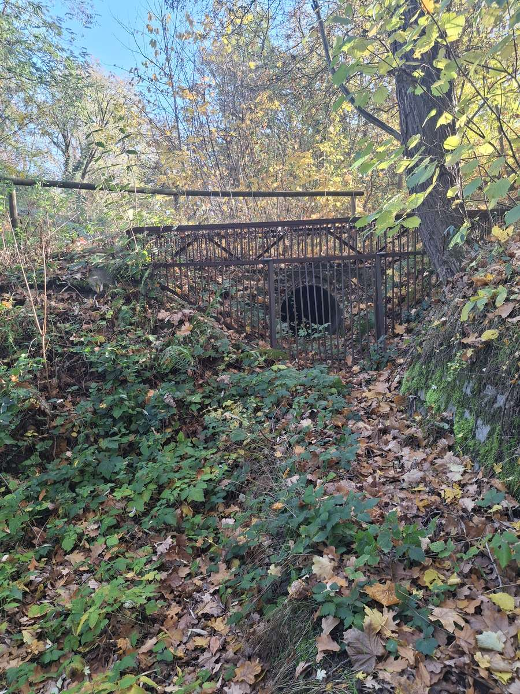
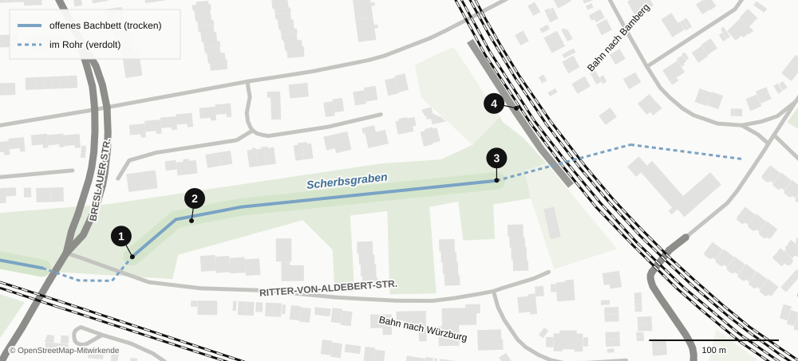
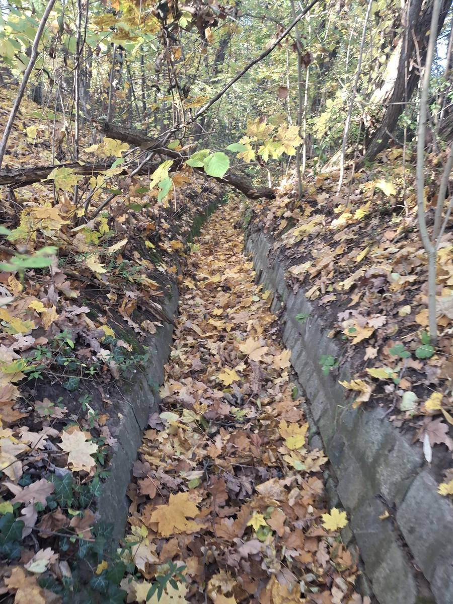
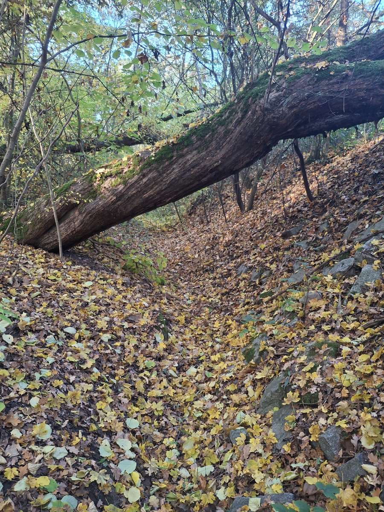
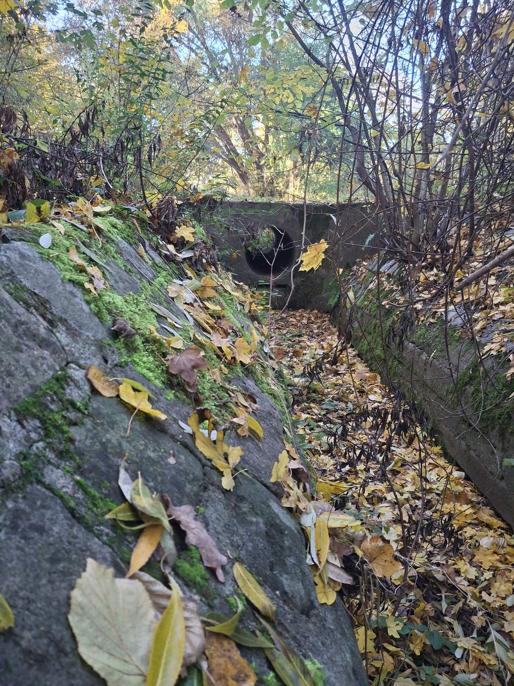
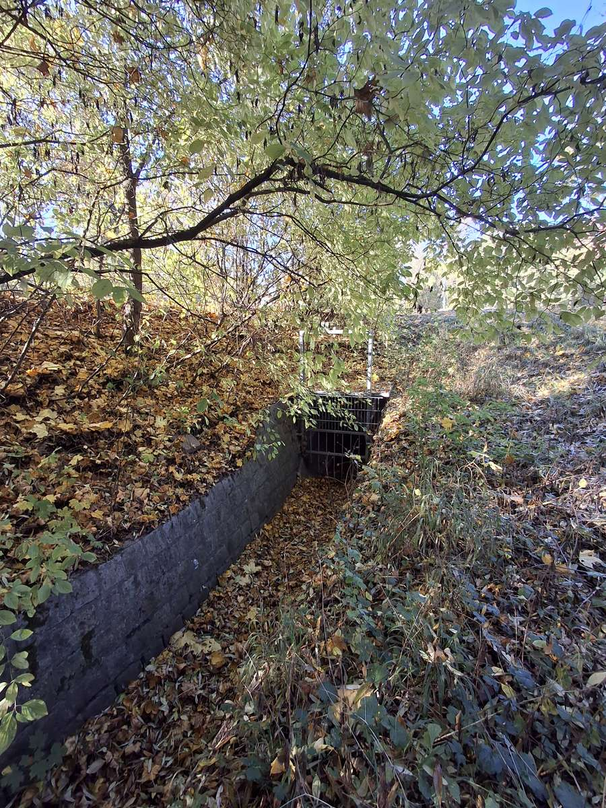
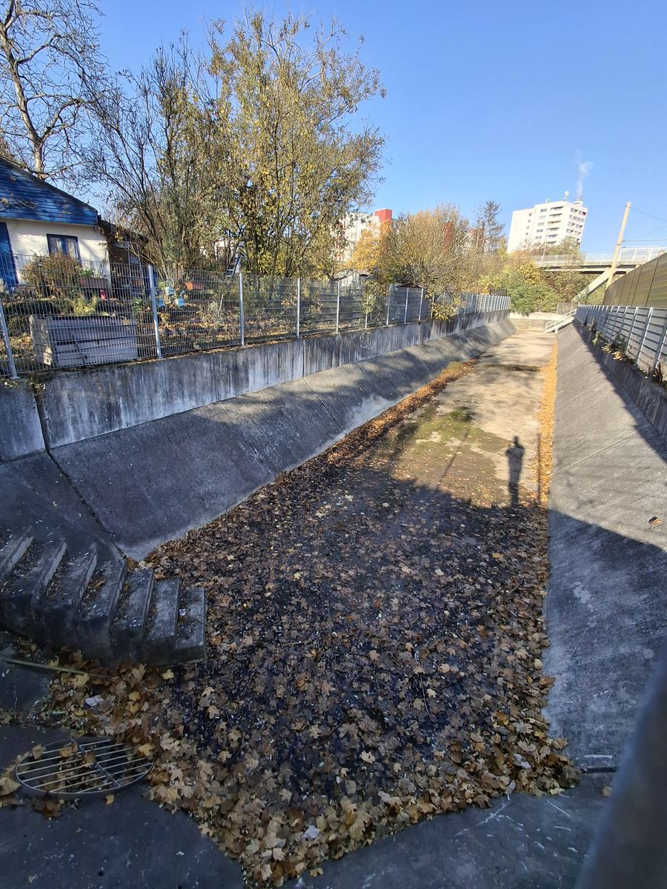

Der Bach, der nicht mehr kommt
Hinter der Ritter-von-Aldebert-Straße liegt ein Bachbett, in dem seit Langem kein Wasser mehr fließt. Ein Porträt des Scherbsgrabens: woher er kommt, ob er je ein Bach war und warum er heute trocken liegt.

Bei meinen Töchtern und mir hieß er immer nur der Löwenkäfig: ein schweres Stabgitter vor einem dunklen Rohr, hinter dem man als Kind ohne Weiteres ein Raubtier vermuten konnte. Er steht im Grünzug hinter der Ritter-von-Aldebert-Straße, dort, wo der Scherbsgraben unter einem Fußweg verschwindet. Das Gitter soll Äste, Laub und neugierige Kinder davon abhalten, in das Rohr zu geraten. Nur: Es gibt nichts mehr, was hineinfließen könnte. Das Bachbett davor ist trocken, voller Laub und Brombeeren.
Nach eigener Beobachtung fließt in diesem Abschnitt auch nach starkem Regen kein Wasser mehr. Wie kommt ein Bach dazu, einfach auszubleiben? Und war das überhaupt je ein Bach – oder nur ein Graben?
Ein Name für ein ganzes Viertel
Der Name ist älter als alles, was heute um ihn herum steht. Er geht auf eine Flurbezeichnung zurück: Eine Familie Scherb besaß hier einst eine Wiese. Heute steht er für ein ganzes Viertel: Die Straße „Scherbsgraben“ führt von der Cadolzburger Straße am Fürthermare und am Sommerbad vorbei, die Statistiker führen das Viertel als Bezirk „Scherbsgraben/Billinganlage“, und die Stadt hat den Grünzug unter dem Namen „Scherbsgraben“ als Landschaftsschutzgebiet ausgewiesen.
Die meisten Fürtherinnen und Fürther verbinden den Namen wohl mit dem Bad. Das Sommerbad entstand Mitte der 1950er-Jahre am Unterlauf, auf einer Fläche, die die Stadt von 1929 an als Schuttplatz genutzt und dabei über die Überschwemmungszone der Rednitz aufgeschüttet hatte. Eröffnet wurde es am 4. August 1955, im Volksmund heißt es bis heute „Lago di Cerbo“. Seit 2007 steht daneben das Thermalbad Fürthermare. Der Bach, der allem den Namen gab, spielt in dieser Geschichte kaum noch eine Rolle.
Fünf Kilometer vom Stadtwald zur Rednitz
Der Scherbsgraben ist im Fürther Stadtgebiet rund fünf Kilometer lang. Sein Lauf lässt sich heute nur noch in Stücken verfolgen, denn über weite Strecken liegt er im Rohr.
Der Lauf des Scherbsgrabens
In Fließrichtung, nicht maßstäblich, nach FürthWiki und OpenStreetMap
- StadtwaldQuelle nahe der Heilstättensiedlung. Die Quelle am Waldlehrpfad schüttet noch, das Wasser erreicht den Waldrand aber nicht. Der Oberlauf ist meist trocken.
- OberfürbergDurch die Siedlung verrohrt. Regen- und Hochwasser wird in den Main-Donau-Kanal geleitet.
- Main-Donau-Kanal, seit 1972Der Kanal schneidet den Oberlauf ab. Ein Rohr im Fürberger Steg sollte einen Mindestabfluss sichern.
- UnterfürbergTeils offen, teils verrohrt, früher mit Dorfweihern. Durchlass unter der Würzburger Bahn.
- Breslauer Straße bis Bamberger BahnKnapp 300 Meter offenes, trockenes Bachbett hinter der Ritter-von-Aldebert-Straße HIER
- HardUnter der Bamberger Bahn hindurch, danach weitgehend unterirdisch.
- RednitzwiesenNördlich des Sommerbads wieder offen. Der Unterlauf wurde 2007 renaturiert, 2018 folgte ein weiteres Stück südlich des Rennwegs.
- MündungSüdlich des Käppnerstegs in die Rednitz.
Bach oder Graben?
Der Name klingt nach Spaten. Doch „Graben“ heißen in Franken viele kleine Bäche, die niemand gegraben hat. Tatsächlich sind sich nicht einmal die Quellen einig, was der Scherbsgraben eigentlich ist.
Was wofür spricht
Ein natürlicher Bach
Eine Karte von 1798 zeigt einen Hauptlauf mit mehreren Zuflüssen und Weihern aus dem Stadtwald.
Der Lauf hat ein eigenes Tälchen mit Böschungen, im FürthWiki „Scherbsgrabental“ genannt.
In Unterfürberg lagen am Bach früher die Dorfweiher.
Das FürthWiki führt die Entstehung als „natürlich“.
Ein angelegter Graben
Die Landschaftsschutzverordnung der Stadt listet den Scherbsgraben unter „Landgräben“, nicht bei den natürlichen Nebentälern wie Farrnbach- oder Zenntal.
Über weite Strecken ist er verrohrt, an der Ritter-von-Aldebert-Straße mit Betonsteinen ausgebaut.
Der Oberlauf dient heute vor allem der Ableitung von Regenwasser.
Selbst OpenStreetMap ist uneins: Die Abschnitte sind als „Graben“ erfasst, der Gesamtlauf als „Bach“.
Die wahrscheinlichste Antwort ist: beides. Der Scherbsgraben dürfte als kleiner Wiesenbach aus dem Stadtwald entstanden sein. Im 20. Jahrhundert wurde er dann Stück für Stück verbaut, verrohrt, begradigt und als Entwässerung genutzt, bis er sich wie ein Graben verhielt. Belegt ist diese Deutung nicht. Klären ließe sie sich mit historischen Karten, etwa der bayerischen Uraufnahme aus dem 19. Jahrhundert, oder mit Bernd Jesusseks Buch „Brückenstadt Fürth“ von 1993, das dem Scherbsgraben ein eigenes Kapitel widmet.
Unterwegs im trockenen Bett
Das Stück hinter der Ritter-von-Aldebert-Straße ist einer der wenigen Abschnitte, in denen der Scherbsgraben noch offen liegt. Es dürfte das sein, was im FürthWiki als „Scherbsgrabental“ beschrieben wird: der Lauf entlang der Würzburger Bahn bis zur Bamberger Bahnlinie. Es beginnt mit einem Gitter und endet mit einem Gitter, dazwischen liegen knapp 300 Meter Bachbett.
Knapp 300 Meter offen
Der Scherbsgraben zwischen Breslauer Straße und Bamberger Bahn

Wer vom Löwenkäfig aus bachaufwärts geht, also gegen die Fließrichtung Richtung Breslauer Straße, läuft zunächst durch ein schnurgerades Gerinne. Seine Böschungen sind mit Betonsteinen befestigt, die Sohle ist mit Laub gefüllt. Wenig später wird das Bett weicher und zugewachsener, an einer Stelle liegt ein umgestürzter Baum quer darüber. Spuren von fließendem Wasser, etwa ausgespülte Rinnen oder angeschwemmtes Material, sind nirgends zu sehen.


Kurz vor der Breslauer Straße quert ein kleines Bauwerk den Graben: eine Betonstirnwand mit einem Rohr darin, offenbar ein früherer Übergang. Eine Funktion hat er heute nicht mehr, alles ist verwildert. Dahinter wird das Bett zur flachen Wiesenmulde, bis es am Auslauf endet. Dort kommt der Scherbsgraben aus einem Rohr, das ihn unter der Bahn und der Breslauer Straße hindurchführt. Eine gemauerte Wand fasst die Öffnung ein, ein Gitter sitzt davor. Hier müsste das Wasser herauskommen. Die Sohle davor ist voller trockener Blätter.


Auf der anderen Seite, nördlich des Löwenkäfigs, liegt direkt an der Bamberger Bahn, nur durch eine Lärmschutzwand von den Gleisen getrennt, ein langgestrecktes Betonbecken mit Treppe und Gitterrost, im Luftbild gut zu erkennen. Es sieht aus wie ein Regenbecken. Ob es mit dem Scherbsgraben zusammenhängt und wohin es entwässert, war öffentlich nicht zu klären. Auch dieses Becken lag bei der Begehung trocken.

Warum kein Wasser mehr kommt
Die naheliegendste Erklärung liegt weiter westlich, zwischen Unter- und Oberfürberg: der Main-Donau-Kanal. Mit seinem Bau ab 1968 wurde Unterfürberg von Oberfürberg getrennt, 1972 ging der Abschnitt bis zur Lände Fürth in Betrieb. Der Kanal zerschneidet seither auch den Scherbsgraben. Die Wikipedia nennt den Teil westlich des Kanals ausdrücklich den „abgetrennten Oberlauf“. Regen- und Hochwasser aus Oberfürberg wird in den Kanal geleitet.
Wie viel danach noch nach Unterfürberg weiterfließt, ist umstritten. In einer Diskussion im FürthWiki aus den Jahren 2020 bis 2022 heißt es einerseits, über ein Rohr im Fürberger Steg werde weiterhin ein Mindestabfluss gesichert. Andererseits fließe nach Auskunft der Stadtentwässerung das Oberfürberger Regenwasser heute über einen eigenen Schacht in den Kanal, und nur bei sehr großen Regenmengen laufe noch etwas durch das Rohr zum Steg. Ein Diskussionsteilnehmer fasst zusammen: Der Bach sei „normalerweise ausser nach Starkregen immer trocken“. Die eigene Beobachtung an der Ritter-von-Aldebert-Straße geht noch weiter: Selbst nach Starkregen kommt hier seit Langem nichts mehr an.
Dazu kommt, was jede wachsende Stadt mit kleinen Bächen macht: Straßen, Dächer und Kanäle fangen den Regen ab, bevor er einen Graben erreichen kann. Wie groß dieser Anteil am Scherbsgraben ist, lässt sich ohne Unterlagen der Stadtentwässerung nicht sagen.
Was offen bleibt
Geschützt ist der Grünzug trotzdem. Die Landschaftsschutzverordnung von 1998 stellt den „gesamten Grünzug im Bereich des Scherbsgrabens mit Bachlauf, Wiesen-, Sukzessions- und Böschungsflächen“ unter Schutz, rund zwölf Hektar, ausdrücklich einschließlich des verrohrten Bereichs. Was dieser Schutz für einen Bachlauf bedeutet, in dem kein Wasser mehr fließt, sagt die Verordnung nicht. Einige Fragen lassen sich öffentlich nicht beantworten:
- Gilt für den Scherbsgraben seit dem Kanalbau eine Auflage für einen Mindestabfluss, und wird sie eingehalten?
- Ist der Scherbsgraben rechtlich noch ein Gewässer oder nur noch ein Entwässerungsgraben, und wer kümmert sich um ihn?
- Wann und warum wurden die Abschnitte in Unterfürberg verrohrt?
- Welche Aufgabe hat das Betonbecken an der Bamberger Bahn?
Wer alte Fotos vom Scherbsgraben hat, sich erinnert, wann hier zuletzt Wasser floss, oder die Antworten kennt: Hinweise sind willkommen, Kontakt siehe Impressum.
Quellen
- FürthWiki: Scherbsgraben (Gewässer), darin verwiesen auf Bernd Jesussek: Brückenstadt Fürth, 1993, S. 59–64
- FürthWiki: Diskussion zum Fürberger Steg (2020–2022)
- FürthWiki: Scherbsgraben (Straße), mit Verweis auf Adolf Schwammberger: Fürth von A bis Z, 1968 · FürthWiki: Sommerbad · FürthWiki: Fürthermare
- FürthWiki: Unterfürberg · FürthWiki: Reichsbodenweg
- Wikipedia: Scherbsgraben · Wikipedia: Unterfürberg
- Landschaftsschutzverordnung der Stadt Fürth vom 26. Mai 1998 in der Fassung vom 8. Februar 2011, § 1 Buchst. i
- Bekanntmachung zur Rhein-Main-Donau-Schifffahrtsstraße, 1972 (Freigabe bis zur Lände Fürth)
- Bezirksdatenblatt 12 „Scherbsgraben/Billinganlage“, Amt für Stadtforschung und Statistik für Nürnberg und Fürth
- BayernAtlas, Luftbild der Bayerischen Vermessungsverwaltung (Lage des Betonbeckens) · OpenStreetMap (Verlauf und Skizze)